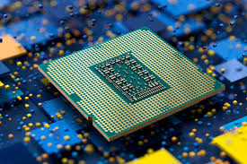

Je hebt hiervoor al veel gelezen over de CPU (central processing unit ofwel de processor) hier zet ik alles over de cpu even op een rijtje.
De processor heeft toegang tot gegevens en kan met deze gegevens gemakkelijk taken uitvoeren. Ook verwerkt de CPU al je gegevens. De processor doet dit in 3 stappen.
STAP 1: De compressor haalt de benodigde gegevens uit het geheugen. STAP 2: De processor vertaalt de gegevens naar voor de processor leesbare code. STAP 3: De processor voert de taak uit. De CPU doet dit miljarden keer per seconde, de kloksnelheid heeft hier invloed, over kloksnelheid heb je gelezen in de fysieke laag.
De processor is cruciaal voor een computer. Hij is als het ware het brein acher de computer. Zonder CPU zou je device nutteloos zijn.
